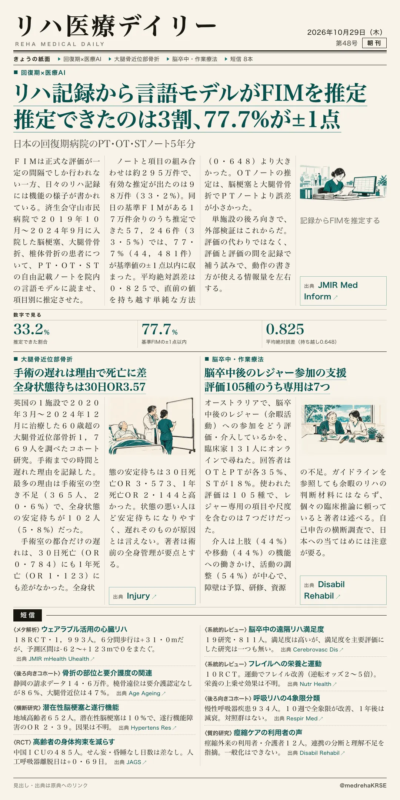
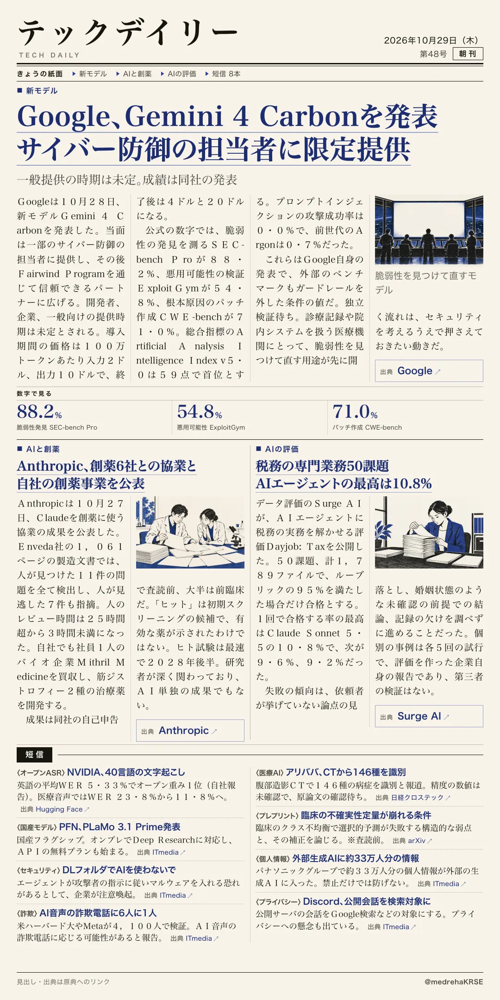

リハ医療デイリー
リハ記録から言語モデルがFIMを推定 推定できたのは3割、77.7%が±1点
日本の回復期病院のPT・OT・STノート5年分
リハの記録から評価の空白を埋められるか。済生会守山市民病院のノートで言語モデルがFIMを推定。推定できたのは33.2%で、同日の基準値との一致は77.7%が±1点以内でした。

テックデイリー
Google、Gemini 4 Carbonを発表 サイバー防御の担当者に限定提供
一般提供の時期は未定。成績は同社の発表
Googleが新モデルGemini 4 Carbonを発表。まず一部のサイバー防御の担当者に提供し、一般向けは未定です。
